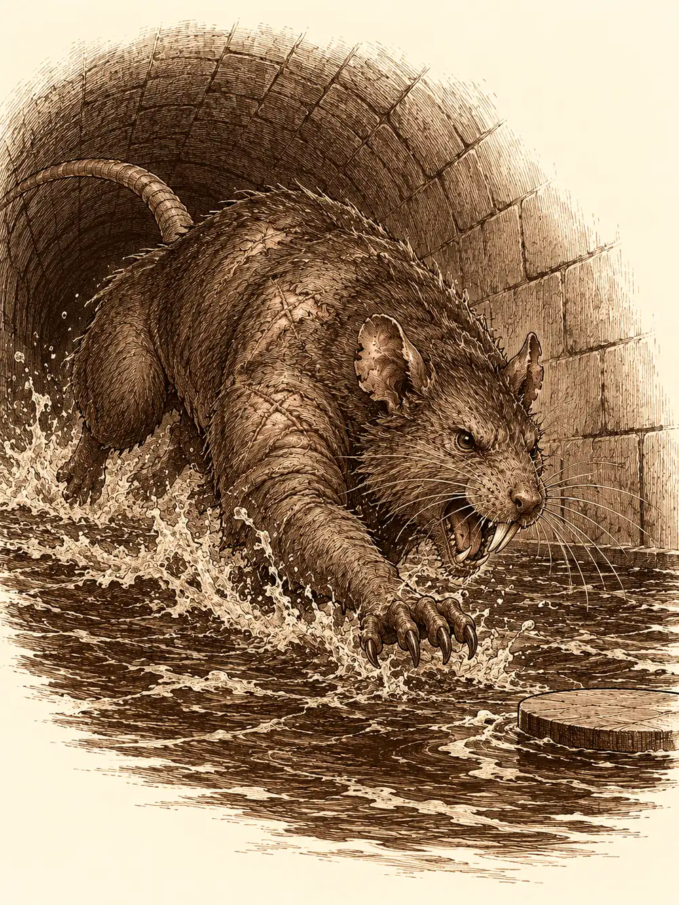

Capítulo 147
Ratas
Libro IX · Mareas y muertos
Por primera vez en muchas semanas, el palacio de Sho amaneció sin malas noticias. Lo peor de la crisis había pasado. Seguía habiendo bolsas que se vaciaban sin explicación y negocios que iban mal, pero el país ya no se desangraba por todas partes a la vez, y Calista lo notaba en la cara de sus cónsules, que habían dejado de entrar en su despacho con los hombros encogidos. Ella seguía entrenando con el estoque cada mañana. Jin pasaba los días en el sur poniendo a punto a las tropas para que no quedaran en ridículo cuando llegaran los refuerzos tritones.
Esa mañana, la shogun desplegó sobre la mesa un mapa de las alcantarillas de Sho. Estaba casi en blanco. Solo aparecían dibujados los túneles más recientes, los de las últimas obras.
"Aparte de los hombres rata y de las ratas gigantes que viven ahí abajo", les dijo a Jin y a Gelbreak, "se nos ha colado en Kuroto un lord vampiro. Está creando una colonia, convirtiendo a gente en sus vasallos, y ha elegido las alcantarillas para hacerlo".
"Un lord vampiro", repitió Jin.
"No sé mucho de ellos, pero sé que es peligroso. Por suerte, con él se ha colado también una cazadora que está dispuesta a ayudarnos". Calista puso el dedo sobre la parte blanca del mapa. "Hoy no vamos a por el lord. Vamos a limpiar el camino de ratas hasta la colonia, para que el equipo que baje después pueda enfrentarse al vampiro sin llegar agotado".
Jin le pidió permiso para hablar de otra cosa. Quería un campo de entrenamiento más duro, más exigente, para que las tropas estuvieran a la altura de lo que se les venía encima.
"Los entrenaré como me entrenaron a mí. No seré tan inhumano como fueron conmigo, pero sé hasta dónde se puede apretar sin romper a nadie".
Calista le pidió que lo pusiera por escrito, que lo preparara con otros generales para que todos pudieran aplicarlo. Jin sacó de la mochila una libreta roja, vieja, con las esquinas gastadas y los ejercicios anotados con letra apretada, y prometió ponerse con ello en cuanto volvieran. Al rebuscar entre sus cosas, sus dedos tropezaron con algo más. El vial. Lo había recogido en la fábrica de los barrios bajos y lo había olvidado allí dentro. Lo sacó con cuidado, como si pudiera morder.
"Es Nox. Lo tenían unos cultistas. Las cajas iban a Puerto de las Espadas y a otros sitios".
Calista lo miró al trasluz, sin destaparlo.
"Lo mandaré analizar. Y presionaremos a esos cultistas, ya sea cortándoles el dinero o por la fuerza. Si están buscando nuevas formas de ingresos es porque los estamos arrinconando". Lo guardó. "De las fronteras me encargo yo. Esa es mi lucha. Vosotros centraos en Kuroto".
Mientras Calista terminaba de prepararse, Jin se acercó a Gelbreak y le preguntó en voz baja si había alguna forma de conocer a los tritones antes de que llegaran, de aprender su manera de combatir.
"La única vez que fui a la ciudad de Calista no me recibieron muy bien. Ya conoces la fama que tenemos los drow. Pues lo mismo, pero con tritones y bajo el mar. Desprecian a los de la superficie". Gelbreak se encogió de hombros. "Tuve que matar a alguno. Habla con ella. Sabrá más que yo". Luego, como si se acordara de algo divertido, añadió que le habían dado unas bolitas para respirar bajo el agua. "Duelen muchísimo, pero te salen branquias".
Antes de bajar se equiparon. Compraron comida y pociones, y en la tienda de Tsugami la modista les tomó medidas a toda prisa, encantada con las novedades que le habían llegado. Gelbreak le regaló a Calista un traje y un gorro, y ella le ofreció algo de comer antes de meterse en la porquería. Luego les lanzó unas palabras de ánimo, de esas que hacían que la sangre corriera más deprisa, y bajaron por una trampilla de desagüe en la zona del parque, que según Calista era de las que mejor olían porque estaban en la parte rica de la ciudad.
No olía bien. El hedor subía por la nariz y se quedaba pegado al paladar, una mezcla de agua podrida, grasa y algo dulzón que nadie quería identificar. La oscuridad era espesa, y Jin no veía a oscuras como el drow ni como la tritón. Tuvieron que guiarlo con luces y con la voz.
El primer obstáculo fueron unas tablas podridas tendidas sobre un canal. Jin saltó al otro lado de un solo impulso. Calista apoyó primero un pie en la madera, la oyó crujir, tragó saliva y cruzó paso a paso, con los brazos abiertos, con la cadera recta y la elegancia de quien se ha educado en una corte, y llegó sin un rasguño. Gelbreak, que no pensaba ser menos, intentó imitarla. También llegó. Más adelante, ante otro canal demasiado ancho, Jin se agachó para que Calista se le subiera a la espalda y saltó con ella a cuestas.
Gelbreak no tuvo tanta suerte. En uno de los pasos resbaló y cayó de lleno en el agua sucia, y salió de ella chorreando, con algo verde colgado de un hombro y una cara de asesinato que hizo que nadie se riera en voz alta.
Llegaron a lo que parecía un callejón sin salida, con una tubería cerrada por una válvula al fondo y agua inmunda delante. Nadie quería meterse. Calista cerró los ojos, empezó a mover las manos y a pronunciar unas palabras despacio, como quien reza, y al cabo de un rato flotaba en el aire un disco plano y luminoso en el que cabía una persona de pie. Jin le prestó su jabalina para meterla en la rueda de la válvula a modo de palanca, y entre los dos, uno a cada lado, tiraron hasta que algo hizo crac y la tubería se abrió.
Al otro lado había tierra firme y silencio. Demasiado silencio. El hedor les tapaba todo lo demás, y por eso no oyeron las patitas hasta que las tuvieron encima.
Los hombres rata llegaron desde los canales y desde las paredes, con ballestas, y detrás de ellos bajaron por los muros enjambres de ratas, unas encima de otras, como una alfombra viva que se movía hacia Jin. El primer virote los sorprendió a todos menos a Gelbreak, que estaba alerta. Los enjambres resistían los golpes porque eran muchos, y cuanto menos quedaban, más rabiosos se volvían. Calista empujó a los enemigos lejos con su magia e inspiró a sus compañeros; Jin encadenó un ataque tras otro con una calma terrible; Gelbreak les metía dolor en la cabeza sin tocarlos. Cuando terminaron, entre los cuerpos encontraron una poción y una mochila enorme. Nadie se puso enfermo por las mordeduras.
Siguieron adelante. Abrieron otra válvula con el mismo truco de la jabalina, y en ese momento salió por otra tubería una nueva oleada de hombres rata y de ratas, y detrás de ellas algo mucho más grande. Era una rata del tamaño de un caballo, con la piel llena de heridas que se le cerraban mientras la miraban. Cargó contra Calista, la arrancó del disco y la tiró al agua inmunda. Cuando la tritón salió a la superficie tenía la cara gris: el veneno ya estaba dentro.
Gelbreak perdió los nervios. Lanzó contra las ratas una descarga de dolor tan amplia y tan furiosa que alcanzó también a Jin. El guerrero apretó los dientes y no soltó lo que estaba haciendo. Calista dejó inmóviles a varios enemigos, Jin y el drow siguieron golpeando, y el monstruo acabó cayendo, por fin, sin tiempo de cerrar más heridas. Las ratas que quedaban huyeron por los canales.
Gelbreak saltó junto a Calista y le puso una poción en los labios.
"Tómate esto".
El veneno cedió poco a poco. Ayudaron a Jin a abrir la última válvula; él olfateó el aire y, al no notar gas, encendió una antorcha. El camino estaba abierto, aunque nadie se atrevió a decir que no quedaran más ratas en todo aquel laberinto.
Más allá, el túnel se ensanchaba. Había estatuas funerarias en las paredes, huesos por el suelo y rastros de sangre, unos secos y oscuros y otros recientes, todos arrastrados en la misma dirección, hacia una puerta de piedra sellada. Allí habían metido cuerpos. Muchos, y no hacía mucho.
"Si eso es la guarida, no estamos preparados", dijo Calista.
No les dio tiempo a retirarse. Cuatro figuras bajaron por las paredes como arañas. Eran vampiros, vasallos del lord, y uno de ellos se plantó delante de Jin y le vomitó encima un chorro de sangre que le quemó la piel y le robó algo más que fuerzas: Jin sintió que una parte de su vida se le iba y no supo si volvería. Calista se convirtió en dragón. Gelbreak tocó el collar que ella le había regalado, de magia antigua y poderosa, y lanzó un conjuro de los que nadie debería ser capaz de lanzar, uno que dejó aturdidos a los cuatro enemigos a la vez. Entre los tres acabaron con ellos.
Calista registró los cuerpos. En uno encontró una nota manchada de sangre que parecía una lista de ingredientes. No era una llave, ni una receta completa, pero la guardó. Pegó la oreja a la puerta y no oyó nada. Antes de irse, dibujó en la piedra un símbolo de muerte, para que lo próximo que entrara o saliera por allí se llevara una sorpresa.
Uno de los vampiros, que parecía muerto, se levantó a espaldas de Jin con la boca abierta.
Una flecha le atravesó la cabeza.
Por la entrada del túnel apareció una mujer de orejas puntiagudas, pelo rojo, ojos verdes y armadura verde, con una ballesta en una mano y una espada larga, muy fina, en la otra.
"Vaya, así que estabais aquí". Miró a Calista de arriba abajo. "Estás herida, y hueles bastante mal".

"Es lo que hay. Hemos limpiado el camino para que tú y los demás podáis entrar sin más problemas que los vampiros".
"Ya. Me encontré con ese tal Banzo. Un buen señor. No muy listo, y no muy hábil con una sola mano, pero me dijo que ibais a mandar un grupo". Se volvió hacia Gelbreak. "Espero verte ahí abajo. No me dejes sola con estos".
Se dio la vuelta y echó a andar. Los dedos de Calista empezaron a brillar. Gelbreak le puso la mano encima y se la bajó con suavidad, sin decir nada, hasta que la cazadora se perdió en la oscuridad de las cloacas.
"Estoy harta", dijo Calista. "De ratas, de vampiros y de mujerzuelas".
Jin miró a Gelbreak, y Gelbreak le devolvió una mirada que decía que hasta él se daba cuenta de cuándo era mejor no hablar.
Salieron a la calle cubiertos de inmundicia. La gente se apartaba tapándose la nariz, y los que reconocían a la shogun le hacían una reverencia sin destaparse. Jin se fue a su gimnasio, que tenía ducha. Calista se rio de Gelbreak y de su chapuzón entre las ratas, y él le devolvió la burla con una magia que la dejó bailando en mitad de la calle un buen rato mientras él se alejaba muy digno.
En el palacio, Mei salió a su encuentro casi corriendo.
"Señorita Calista, están aquí".
Al fondo de la sala aguardaba un grupo de tritones y, entre ellos, una figura cubierta por un velo que no dejaba ver nada de su rostro. Caminaba como si flotara. Calista tragó saliva y se acercó intentando parecer digna aunque apestara, y Gelbreak le cogió la mano.
"Creo que deberías darte un baño, Calista", dijo la perla, mirándola de arriba abajo.
"Vaya. Al menos sigues teniendo los sentidos despiertos. ¿Habéis venido con el ejército prometido?".
La perla velada le explicó que los primeros soldados estaban llegando ya al puerto y se moverían hacia el sur, y que con ellos venían estrategas que tomarían el mando. Le preguntó, con un tono de institutriz, por qué la shogun bajaba a las cloacas, y le hizo saber que, a partir de ese día, se quedaría en palacio para guiarla en sus asuntos.
"Es una orden directa de él".
Cada vez que la visitante decía él, Calista enmudecía y palidecía. La perla añadió que su guardia personal se quedaría en el palacio y sustituiría a algunos soldados locales, que eran menos diestros. Luego se volvió hacia Gelbreak.
"Han decidido enviar un guardián más personal. Antiguo guardián, me puede entregar el collar".
"Esa decisión no es suya", dijo Calista. "Yo elijo quién es mi guardián".
"De momento puede quedárselo. Cuando llegue el nuevo, dentro de unas semanas, se lo haré saber. Por orden de él".
"Si viene un guardián nuevo", dijo Gelbreak con la mano en el estoque, "tendrá que demostrar lo que vale".
La perla no contestó. Pidió su habitación. Calista la acompañó escaleras arriba como si fuera una sirvienta más, le abrió la puerta del cuarto de invitados y aceptó revisar los informes al día siguiente. La puerta se cerró. Los guardias tritones empezaron a repartirse por los pasillos. Calista y Gelbreak se fueron a su cuarto sin decir una palabra, y la risa de las cloacas se les había quedado muy lejos.
A la mañana siguiente, la perla, que se llamaba Islil, apartó a Mei y se sentó junto a Calista a la misma altura del trono. Revisó cada informe, convirtió cada retraso en un reproche sobre la relación de la shogun con su guardián y la amenazó con devolverla al mar. Calista pasó la mañana entre presupuestos, asuntos del puerto y organización del ejército hasta que se mareó, y Gelbreak la sostuvo y exigió una pausa. Cuando la magia del drow se encendió y sus ojos se volvieron rojos, varios tritones rodearon a Islil y otros le apuntaron al cuello. Calista se interpuso, todavía tambaleándose, y la perla retiró a los suyos. En la habitación, Calista le pidió que no los provocara. Él prometió contenerse y se quedó a su lado, despierto, hasta que ella se durmió. El palacio ya no les parecía un lugar seguro.
Banzo, desde la terraza de una taberna, vio llegar al ejército al puerto: navíos hechos de conchas y materiales del fondo del mar, soldados con espadas curvas de un metal que brillaba distinto, armaduras mejores que las de cualquier samurái empobrecido del shogunato. Entre los oficiales de tridente destacaba un joven que daba órdenes a los soldados y a los generales. Banzo pagó su cerveza y se fue a la base a hablar con Kurobane.
El ninja volvía del portal y le pidió perdón por haber antepuesto sus preguntas a las necesidades del grupo ante los guardianes. Banzo le encargó que reparara el error investigando: quién podía ser afín a cada esfera y cómo podría alguien tocar las cuatro a la vez. Kurobane propuso preguntarle a la que las había llevado; Banzo dejó a Danifae como último recurso y prometió pedir acceso a la biblioteca de palacio. Dentro, Jin estudiaba su cuaderno rojo y le pidió a Kurobane ayuda para diseñar un entrenamiento que aprovechara las capacidades de cada soldado. Kurobane le propuso meditación, sigilo y ataques desde la sombra, pero dijo que antes tenía otros asuntos. Jin volvió a su cuaderno, decepcionado, y anunció que buscaría a otro.
Días después, Calista bajó con Islil a distribuir tropas y se encontró con el general tritón. Se llamaba Wel, y la saludó con una familiaridad burlona. Él decía que su ejército solo le obedecía a él. Calista exigió coordinarlo con los mandos locales y mandar patrullas al norte, y al final él aceptó enviar allí una mezcla de ambas fuerzas en patrullas de cuatro. Cuando llegó Gelbreak, Wel se presentó como el que había ocupado antes su lugar. Calista le confesó a Gelbreak, en voz baja, que había tenido una relación con el general antes de llegar a Kuroto. El drow le apretó la mano hasta hacerle daño, se dio cuenta, aflojó y le pidió perdón. Wel se marchó al sur con otra insinuación en los labios.
Una noche, en los callejones de los barrios bajos, una figura de ojos ámbar cortó el paso a dos soldados tritones para preguntarles cómo entrar en el palacio. Cuando desenvainaron, mató a uno con un arma de cañón corto y estranguló al otro con un látigo. Al amanecer, Banzo encontró los dos cadáveres, uno con un agujero en el cráneo y el otro con el cuello roto. Dispersó a los curiosos, los cubrió y llamó a Gelbreak por la caracola. Calista, desde el palacio, temió que Islil y el general exigieran represalias, y antes de que él saliera le pidió que dejara con ella a Wasabi. Gelbreak tocó el collar, y la pequeña serpiente salió del humo todavía medio dormida, con el encargo de cuidar de la shogun y llevar recados.
Gelbreak reconoció las heridas. Él y Calista, dijo, habían tenido tratos con una mujer en otro plano; la habían perjudicado y habían vuelto al suyo aprovechando una única oportunidad. No quiso decir su nombre. Banzo quería devolver los cuerpos a los suyos; Gelbreak temía que la perla y el general usaran aquellas muertes para quitarle el cargo a Calista y llevársela al mar. Pese a las protestas del goliat, desintegró los dos cadáveres. Banzo le advirtió que había testigos y que el problema no se podía esconder del todo.
En el despacho de Calista, protegido por un silencio mágico, Gelbreak nombró por fin a su sospechosa: Sindra, una drow que creía llegada al mismo tiempo que ellos. No la habían visto, pero él reconocía en las muertes sus marcas. Calista pidió guardar silencio sobre aquello y que el grupo se concentrara en el sur y en los cultistas. Revisaron también lo de las esferas: ella custodiaba las de fuego y rayo, tenía a buen recaudo la de agua, y la de tierra seguía dentro de una niña. Ninguna opción sobre Danifae parecía segura, ni liberarla, ni retenerla sin sacarle nada, ni ejecutarla. Gelbreak propuso que Kazuki, con su labia y su capacidad de cambiar de forma, la interrogara con Sirth al lado. Calista le encargó a Banzo que los buscara.
En la base de Sho, Kazuki le ofreció un trozo de queso a un ratón, que resultó ser Arwen. Un aldeano llamó a la puerta furioso reclamando unas semillas y unas monedas, mientras Channi se escondía debajo de la mesa; al sacudirse, se le cayeron ambas cosas de entre las hojas. Arwen le dijo que robar estaba mal, pero cuando Channi le explicó que las semillas necesitaban tierra y agua, las dos salieron al jardín. Channi las enterró cantando y Arwen las regó con agua mágica bailando alrededor, y como los brotes le parecieron pequeños, quiso que crecieran más. La magia se le escapó de las manos. Las plantas invadieron la base, reventaron la madera y se llenaron de frutos. Channi se durmió feliz entre la comida, y Arwen, convertida en oso, se la llevó al palacio. La base quedó hecha una selva.
En la base, bajo uno de los árboles nuevos, se despertó Serafina a la mañana siguiente. Un cochero llamado Igor le traía un paquete envuelto en seda de parte de Alister: un vestido azul de espalda abierta y una carta que la invitaba a un baile en la mansión Taishi. Se lo probó en una habitación vacía. Al salir se encontró con Kurobane. Ella le dijo que el regalo era del mismo hombre de las flores y que sospechaba que buscaba algo más. Kurobane le aconsejó cautela, le acarició la mano y la acorraló suavemente contra la pared. Ella lo amenazó con un puñetazo si no se calmaba y terminó besándole el mentón; él la besó un momento en los labios y se fue diciendo que seguirían después. Serafina se quedó sentada junto a la pared, con el vestido azul todavía puesto, preguntándose qué iba a hacer.